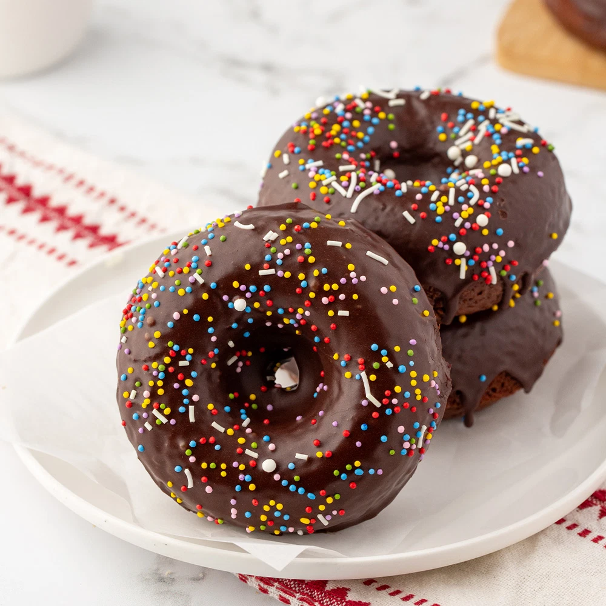

Home
Glazed Chocolate Donuts

Description
Glazed chocolate donuts are soft, fluffy rings of sweet dough coated in a smooth, glossy layer of rich chocolate glaze. The donut itself has a light, tender texture, while the chocolate coating adds a deep cocoa flavor and a satisfying sweetness.
With their irresistible combination of a pillowy interior and silky chocolate topping, glazed chocolate donuts make for a delicious treat that pairs perfectly with a cup of coffee, tea, or a cold glass of milk.
Ingredients
- cooking spray
- 2 cups all-purpose flour
- 3/4 cup white sugar
- 1/2 cup unsweetened cocoa powder
- 1 teaspoon baking powder
- 1 teaspoon baking soda
- 1 teaspoon salt
- 3/4 cup milk
- 2 tablespoons milk
- 2 eggs
- 2 tablespoons butter, melted
- 1 teaspoon vanilla extract
Glaze
- 1/4 cup butter
- 1 tablespoon heavy cream
- 1 tablespoon milk
- 2 teaspoons corn syrup
- 1 teaspoon vanilla extract
- 1 ounce bittersweet chocolate, chopped
- 1 ounce semisweet chocolate chips
- 1 and 1/4 cups confectioner's sugar
Steps
- Preheat the oven to 325 degrees F (165 degrees C). Coat 11 donut cups with cooking spray
- Whisk flour, sugar, cocoa powder, baking powder, baking soda, and salt together in a bowl. Beat in 3/4 cup plus 2 tablespoons milk, eggs, 2 tablespoons melted butter, and 1 teaspoon vanilla extract using an electric mixer until well blended.
- Pour batter into a resealable plastic bag; cut off 1 corner. Pour batter into donut cups, filling each to about 3/4 full.
- Bake in the preheated oven until a toothpick inserted into a donut comes out clean, about 10 minutes. Cool slightly, 5 to 10 minutes.
- Meanwhile, combine 1/4 cup butter, cream, 1 tablespoon milk, corn syrup, and 1 teaspoon vanilla extract in a small saucepan over medium-low heat until butter is completely melted, 2 to 3 minutes. Reduce heat to low; stir in bittersweet and semisweet chocolate until melted, 2 to 3 minutes. Off heat, whisk in confectioners' sugar until combined.
- Dip cooled donuts into glaze; cool and let set, about 15 minutes.